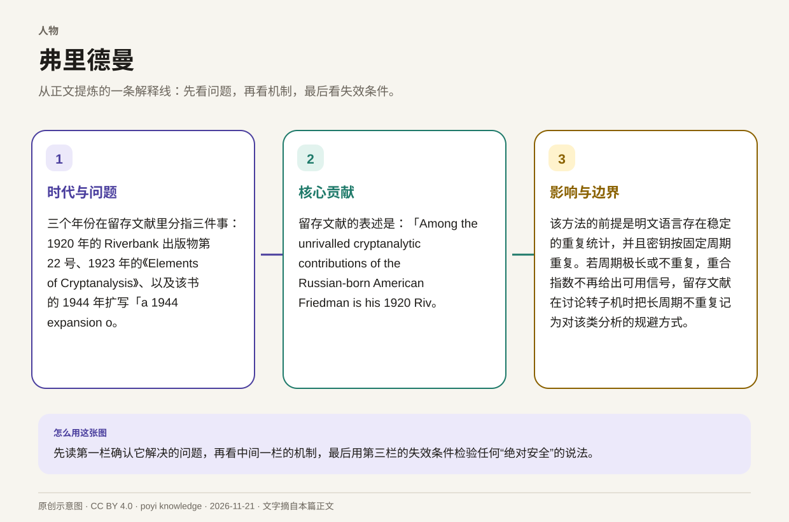

原理与机制
人物：弗里德曼（Friedman）。留存文献的表述是：「Among the unrivalled cryptanalytic contributions of the Russian-born American Friedman is his 1920 Riverbank Publication no.22」，主题是使用重合指数做密码分析。同一段还记：「Friedman coined the term cryptanalysis in 1920, using it in his 1923 book Elements of Cryptanalysis」。

为什么重要
留存文献记重合指数可由密文样本直接计算，用于确定周期 t，作为 Kasiski 方法的替代；同一句也说明这一学科名称的落定时间，方法与术语由此一同进入叙述。
应用与实例
复算记在 calculations 中：重合指数按留存件的定义与式(7.2)实现，并以逐对枚举的第二条路径复核，手算例 AAB=1/3、AABBC=4/20、ABCD=0、AAAA=1 全部吻合；留存件写明 IC 的取值范围从无穷周期的 1/n 到单表替换的 p，并印出 n=26 时 r=0.03846、表 7.1 的英语 p=0.0667，实测单表替换后 IC 不变；区间的两端用的是本样本自己的明文 IC（周期 1）与留存件印出的下界 1/n（最长周期），而不是把样本硬塞进 0.0667；按例 7.76 的方法对 t=1..10 分组取均值，与明文 IC 相符的最小候选恰为本批次埋入而未告知分析的周期 5；真周期的倍数同样相符，故 10 也入选，该统计量无法区分二者。本批样本为本仓自撰英文散文，其明文 IC 实测 0.07107，留存件的 0.0667 只作为其对英语的估计被引用，未被当作本样本的匹配目标。复算所用的加密映射需要一个本档案之外的印出值来锚定：留存讲义给出「repeating the keyword LEMON produces the keystream LEMONLEMONLE」并接「This keystream has a period of five because the five-letter keyword repeats」，同节并印出整例「Plaintext: ATTACKATDAWN Keystream: LEMONLEMONLE Ciphertext: LXFOPVEFRNHR」。分组重合指数计算所用的密文即由这一映射生成，其正确性由该行印出的密文检验。
边界与攻击面
该方法的前提是明文语言存在稳定的重复统计，并且密钥按固定周期重复。若周期极长或不重复，重合指数不再给出可用信号，留存文献在讨论转子机时把长周期不重复记为对该类分析的规避方式。
历史与背景
三个年份在留存文献里分指三件事：1920 年的 Riverbank 出版物第 22 号、1923 年的《Elements of Cryptanalysis》、以及该书的 1944 年扩写「a 1944 expansion of which, Military Cryptanalysis」。把它们合并成单一年份即失真。
可核角色与证据链
弗里德曼归入破译方法，登记时代为战间期、第二次世界大战。该条目只登记有来源支持的教育/任职机构、公开文本或专利、参与的标准/机器/事件与可核同行评价。来源账本包括：Wikipedia search entry for 弗里德曼；MacTutor History of Mathematics Archive, University of St Andrews。
没有来源支持的出生、死亡、家庭、师承、奖项、论文数量和任职日期不补写；同名人物不合并；后人归功与本人文本分开。
逐步示例与核验
角色关系模型
只登记四类关系：教育/任职机构、公开文本或专利、参与的标准/机器/事件、可核同行评价。每条关系都要有来源；没有来源的师承、奖项和私生活不进入模型。
参考出处
- Wikipedia search entry for 弗里德曼. https://zh.wikipedia.org/w/index.php?search=%E5%BC%97%E9%87%8C%E5%BE%B7%E6%9B%BC
- MacTutor History of Mathematics Archive, University of St Andrews. https://mathshistory.st-andrews.ac.uk/